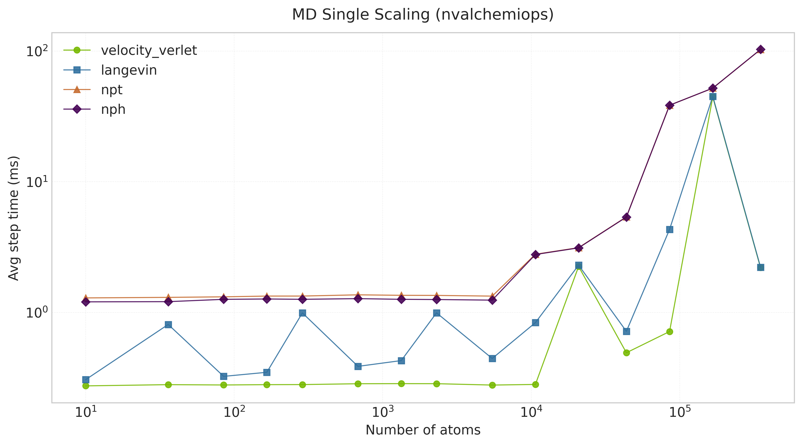
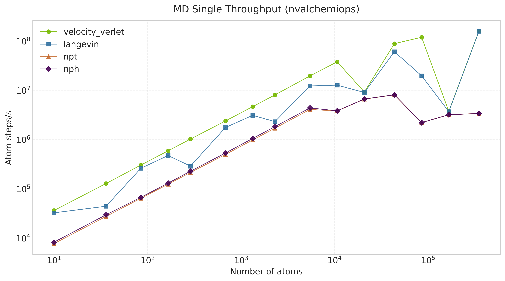
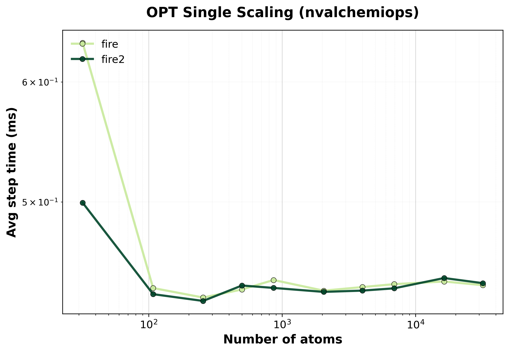
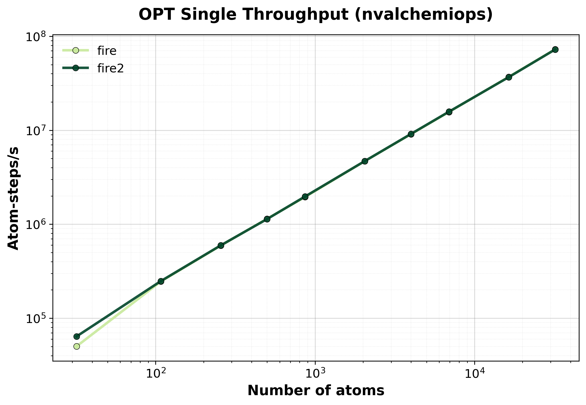
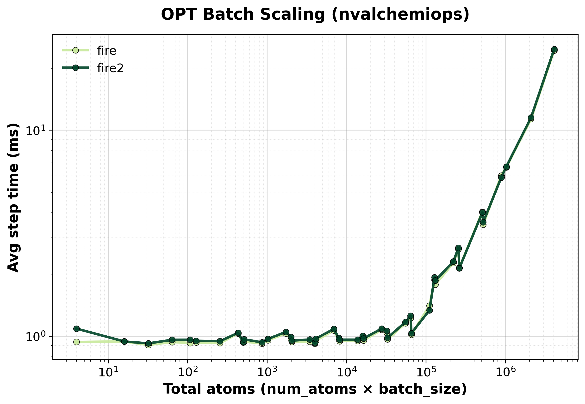
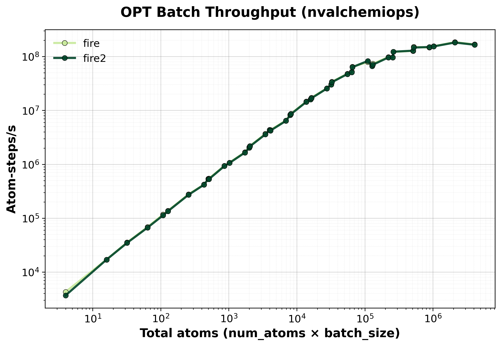

Dynamics Benchmarks#
This page presents benchmark results for molecular dynamics (MD) integrators and geometry optimization methods using the nvalchemiops GPU-accelerated implementations. Results show scaling behavior for both single-system and batched simulations across different system sizes using Lennard-Jones argon systems.
Warning
These results are intended to be indicative only: your actual performance may vary depending on the atomic system topology, software and hardware configuration and we encourage users to benchmark on their own systems of interest.
How to Read These Charts#
Time Scaling : Average time per MD/optimization step (ms) vs. system size. Lower is better. For batched runs, this is the time to process all systems in the batch.
Throughput : Atom-steps processed per second. Higher is better. For batched systems, this represents the total number of atoms across all systems in the batch multiplied by the number of steps per second.
Ensemble : MD ensemble type - NVE (constant energy), NVT (constant temperature), NPT (constant pressure-temperature), or NPH (constant pressure-enthalpy).
Batch Size : Number of independent systems processed simultaneously. Batch size of 1 represents single-system mode.
Molecular Dynamics (MD)#
GPU-accelerated MD integrators using NVIDIA Warp kernels with optimized neighbor lists. Supports various ensembles including microcanonical (NVE), canonical (NVT), and isobaric-isothermal (NPT).
Single-System MD#
Performance for single molecular dynamics systems showing how throughput scales with system size.
Time Scaling#
{kind=link}

Average step time vs. system size for single-system MD integrators.#
Throughput#
{kind=link}

Throughput (atom-steps/s) for single-system MD integrators.#
Batched MD#
Performance for batched MD simulations showing how throughput scales with both system size and batch size. Batching enables efficient parameter sweeps and ensemble simulations.
Time Scaling#

Average step time for batched MD simulations showing batch size scaling.#
Throughput#

Total throughput (atom-steps/s) for batched MD systems.#
Available Integrators#
Velocity Verlet (NVE) : Symplectic integrator that conserves total energy. Excellent stability for constant energy simulations. Standard choice for microcanonical ensemble.
Langevin (NVT) : Stochastic dynamics using the BAOAB splitting scheme for accurate temperature control. Maintains canonical ensemble through friction and random forces.
Nose-Hoover Chain (NVT) : Deterministic thermostat using extended system variables. Provides rigorous canonical sampling without stochastic forces.
NPT Integrator : Isobaric-isothermal ensemble allowing cell fluctuations to maintain constant pressure and temperature. Uses Nose-Hoover chains for temperature control and barostat for pressure control.
NPH Integrator : Isobaric-enthalpic ensemble with constant pressure. Similar to NPT but without temperature control.
Geometry Optimization#
GPU-accelerated FIRE and FIRE2 (Fast Inertial Relaxation Engine) optimizers for efficient energy minimization. Both adapt timestep and velocity-force mixing for robust convergence on diverse energy landscapes. FIRE2 (Guénolé et al., 2020) introduces a deferred half-step and modified velocity mixing for improved convergence behavior.
Single-System Optimization#
Performance for single-system geometry optimization showing convergence speed and computational efficiency.
Time Scaling#
{kind=link}

Average step time vs. system size for FIRE optimizer.#
Throughput#
{kind=link}

Throughput (atom-steps/s) during geometry optimization.#
Batched Optimization#
Performance for batched optimization showing how multiple structures can be relaxed simultaneously for efficient saddle point searches, transition state finding, or structural screening.
Time Scaling#
{kind=link}

Average step time for batched FIRE optimization.#
Throughput#
{kind=link}

Total throughput (atom-steps/s) for batched optimization.#
FIRE Algorithm Features#
Adaptive Timestep:
Increases timestep when optimization is progressing smoothly (power P = F · v > 0)
Decreases timestep and resets velocities when moving uphill (P < 0)
Parameters:
dt_max(10.0 fs),f_inc(1.1),f_dec(0.5)
Velocity Mixing:
Mixes velocity with force direction: v → (1-α)v + α|v|F̂
Decreases mixing parameter α over time for faster convergence
Parameter:
f_alpha(0.99)
Maximum Displacement:
Limits atomic displacement per step to prevent instability:
maxstep(0.2 Å)
Convergence:
Checks maximum force component: max(|F|) < fmax (default 0.01 eV/Å)
Hardware Information#
GPU: NVIDIA H100 80GB HBM3
Benchmark Configuration#
System Setup#
Parameter |
Value |
|---|---|
System Type |
FCC argon lattice with periodic boundaries |
Lattice Constant |
5.26 Å (argon) |
Temperature |
300 K |
Potential |
Lennard-Jones (ε = 0.0104 eV, σ = 3.40 Å) |
Cutoff Distance |
8.5 Å |
Neighbor List |
Cell list algorithm with skin distance 1.0 Å |
Rebuild Interval |
Every 10 steps (or displacement-based) |
MD Parameters#
Parameter |
Value |
|---|---|
Timestep |
1.0 fs (0.001 time units) |
Total Steps |
10,000 |
Warmup Steps |
100 (excluded from timing) |
Langevin Friction |
0.01 fs⁻¹ |
NPT Pressure |
1.0 bar |
NPT Barostat Mass |
75.0 (time units²) |
Optimization Parameters#
Parameter |
Value |
|---|---|
Max Steps |
1,000 |
Force Tolerance |
0.01 eV/Å |
Initial Perturbation |
Gaussian (σ = 0.15 Å for batched, 0.1 Å for single) |
dt_start |
1.0 fs |
dt_max |
10.0 fs |
maxstep |
0.2 Å |
System Sizes#
Single-System Benchmarks:
MD: 256, 512, 1024, 2048, 4096 atoms
Optimization: 256, 512, 1024, 2048 atoms
Batched Benchmarks:
System sizes: 256, 512, 1024 atoms per system
Batch sizes: 1, 2, 4, 8, 16, 32 systems
Running Your Own Benchmarks#
To reproduce these benchmarks or test on your own hardware:
Single-System MD#
cd benchmarks/dynamics
python benchmark_md_single.py --config benchmark_config.yaml
Batched MD#
python benchmark_md_batch.py --config benchmark_config.yaml
Single-System Optimization#
python benchmark_opt_single.py --config benchmark_config.yaml
Batched Optimization#
python benchmark_opt_batch.py --config benchmark_config.yaml
FIRE1 vs FIRE2 Comparison#
Full optimization runs comparing FIRE1 and FIRE2 convergence and wall-clock time on fixed-cell and variable-cell LJ systems:
python benchmark_fire_compare.py --config benchmark_config.yaml --output-dir ./benchmark_results
FIRE2 Kernel Performance#
Raw per-step GPU kernel timing using CUDA events, sweeping total atoms and batch sizes across float32 and float64:
python benchmark_fire2.py --config benchmark_config.yaml --output-dir ./benchmark_results
Configuration File#
Edit benchmark_config.yaml to customize benchmarks:
# MD single-system
md_single:
enabled: true
system_sizes: [256, 512, 1024, 2048, 4096]
integrators:
velocity_verlet:
steps: 10000
dt: 0.001 # fs
warmup_steps: 100
langevin:
steps: 10000
dt: 0.001
temperature: 300.0 # K
friction: 0.01 # 1/fs
# MD batched
md_batch:
enabled: true
system_sizes: [256, 512, 1024]
batch_sizes: [1, 2, 4, 8, 16, 32]
integrators:
velocity_verlet:
steps: 10000
dt: 0.001
warmup_steps: 100
# Optimization single-system
opt_single:
enabled: true
system_sizes: [256, 512, 1024, 2048]
optimizers:
fire:
max_steps: 1000
force_tolerance: 0.01 # eV/Å
# Optimization batched
opt_batch:
enabled: true
system_sizes: [256, 512]
batch_sizes: [1, 2, 4, 8, 16]
optimizers:
fire:
max_steps: 1000
force_tolerance: 0.01
# Potential parameters
potential:
epsilon: 0.0104 # eV
sigma: 3.40 # Å
cutoff: 8.5 # Å
skin: 1.0 # Å
neighbor_rebuild_interval: 10
Output#
Results are saved as CSV files in docs/benchmarks/benchmark_results/:
dynamics_md_single_nvalchemiops_<gpu_sku>.csvdynamics_md_batch_nvalchemiops_<gpu_sku>.csvdynamics_opt_single_nvalchemiops_<gpu_sku>.csvdynamics_opt_batch_nvalchemiops_<gpu_sku>.csvfire_compare_<gpu_sku>.csvfire2_kernel_benchmark_<gpu_sku>.csv
Generate plots with:
cd docs/benchmarks
python generate_plots.py